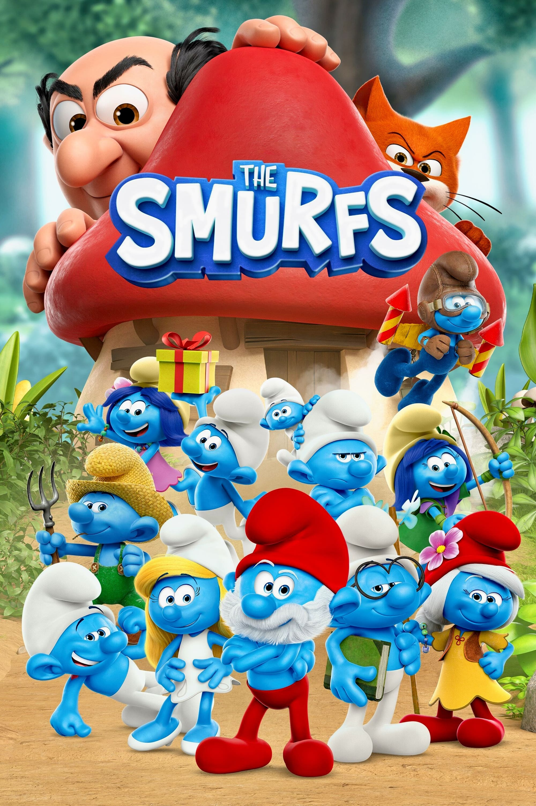

SMURFS MOVIES



The Smurfs (French: Les Schtroumpfs; Dutch: De Smurfen) is a Belgian comic franchise centered on a fictional colony of small, blue, humanoid creatures who live in mushroom-shaped houses in the forest. The Smurfs was created and introduced as a series of comic characters by the Belgian comics artist Peyo (the pen name of Pierre Culliford) in 1958, wherein they were known as Les Schtroumpfs. There are more than 100 Smurf characters, and their names are based on adjectives that emphasise their characteristics, such as "Jokey Smurf", who likes to play practical jokes on his fellow Smurfs. "Smurfette" was the first female Smurf to be introduced in the series. The Smurfs wear Phrygian caps, which came to represent freedom during the modern era.


Pierre Culliford (known as Peyo) was born in Brussels on 25 June 1928. He started his working life at the age of 15. He began as a cinema projectionist, and then went to work in an animation studio. The studio closed down and Peyo decided to focus on cartoon comic strips. These were published in various daily newspapers, but the early days were difficult.